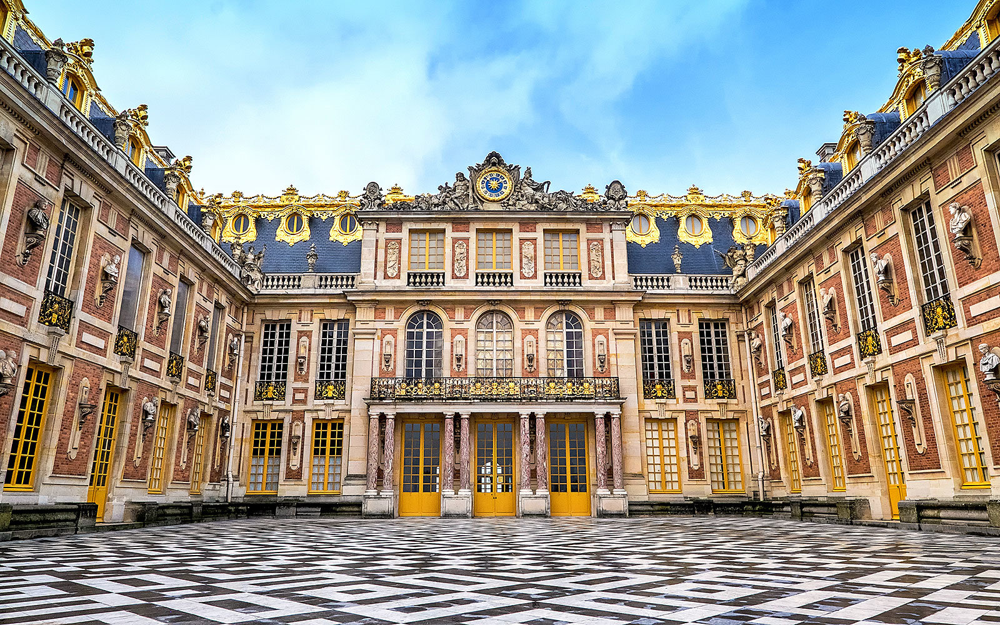

Paris, la merveille de l'Europe
Paris, capitale de la France, est une grande ville européenne et centre mondial de l'art, de la mode,de la gastronomie et de la culture. Outre les monuments comme la Tour Eiffel et la cathédrale Notre-Dame-de-Paris la ville est réputée pour ses café et ses boutique de luxes.
Tour Eiffel
La tour Eiffel est l'emblême absolue de Paris et ce serait un sacrilège de ne pas passer prendre une photo devant. Haute de 325 mètres, et construite pour l'exposition universelle de Paris en 1889 par Gustave Eiffel, elle détient jusqu'en 1930 le record du plus haut monument du monde. Aujourd'hui, elle est le deuxième monument le plus visité après la cathédrale Notre-Dame-de-Paris. La tour Eiffel dispose de différents restaurants pour profiter d'un repas avec une vue spectaculaire.Château de Versailles
Chef d'oeuvre de grandeur, le château de Versailles est le symbole de la monarchie française et fût la demeure du "Roi Soleil" Louis XIV ainsi que de ses descendants Louis XV et Louis XVI. Un simple pavillon de chassen pour le roi Louis XIII qui fût transformé par la merveille qu'il est aujourd'hui sous Louis XIV pour mieux établir sa domination sur la noblesse et laisser son empreinte sur le monde. Passez une bonne journée hors du commun en visitant le Château de Versailles.
Sacré-coeur
Sacré-coeur Paris
La Basilique du Sacré Coeur est l'un des lieux incontournables de Paris. Construite après la guerre franco-prussienne de 1870, la Basilique du Sacré-coeur avait pour but de se consacrer au coeur du Christ et d'expirer les péchés des Français commis pendant cette guerre.
Située en haut de le butte Montmartre, le Sacré-coeur, avec son incroyable histoire, est le deuxième monument religieux le plus visité de la France après Notre6Dame de Paris. Non seulement l'intérieur est magnifique avec ses pierres blanches et sa peinture du Christ dans le coeur, mais la vue de Paris depuis le haut de Montmartre est à couper le souffle!
À quelques pas de la basilique, se trouvent la place du Tertre, le quartier des Abbesses aux petites rues escarpées, et au pied de la butte, le célèbre cabaret du Moulin Rouge.